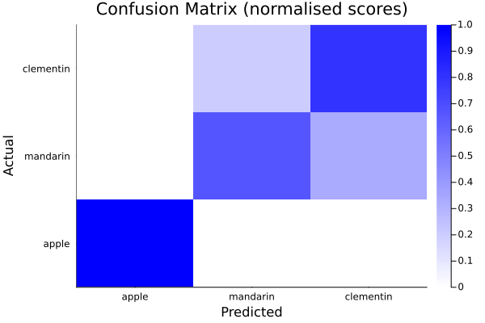

The BetaML.Utils Module
BetaML.Utils — ModuleUtils moduleProvide shared utility functions and/or models for various machine learning algorithms.
For the complete list of functions provided see below. The main ones are:
Helper functions for logging
- Most BetaML functions accept a parameter
verbosity(choose betweenNONE,LOW,STD,HIGHorFULL) - Writing complex code and need to find where something is executed ? Use the macro
@codelocation
Stochasticity management
- Utils provide [
FIXEDSEED], [FIXEDRNG] andgenerate_parallel_rngs. All stochastic functions and models accept arngparameter. See the "Getting started" section in the tutorial for details.
Data processing
- Various small and large utilities for helping processing the data, expecially before running a ML algorithm
- Includes
getpermutations,OneHotEncoder,OrdinalEncoder,partition,Scaler,PCAEncoder,AutoEncoder,cross_validation. - Auto-tuning of hyperparameters is implemented in the supported models by specifying
autotune=trueand optionally overriding thetunemethodparameters (e.g. for different hyperparameters ranges or different resources available for the tuning). Autotuning is then implemented in the (first)fit!call. Provided autotuning methods:SuccessiveHalvingSearch(default),GridSearch
Samplers
- Utilities to sample from data (e.g. for neural network training or for cross-validation)
- Include the "generic" type
SamplerWithData, together with the sampler implementationKFoldand the functionbatch
Transformers
- Funtions that "transform" a single input (that can be also a vector or a matrix)
- Includes varios NN "activation" functions (
relu,celu,sigmoid,softmax,pool1d) and their derivatives (d[FunctionName]), but alsogini,entropy,variance,BIC,AIC
Measures
- Several functions of a pair of parameters (often
yandŷ) to measure the goodness ofŷ, the distance between the two elements of the pair, ... - Includes "classical" distance functions (
l1_distance,l2_distance,l2squared_distancecosine_distance), "cost" functions for continuous variables (squared_cost,relative_mean_error) and comparision functions for multi-class variables (crossentropy,accuracy,ConfusionMatrix,silhouette) - Distances can be used to compute a pairwise distance matrix using the function
pairwise
Module Index
BetaML.Utils.accuracyBetaML.Utils.accuracyBetaML.Utils.accuracyBetaML.Utils.accuracyBetaML.Utils.accuracyBetaML.Utils.aicBetaML.Utils.autojacobianBetaML.Utils.autotune!BetaML.Utils.batchBetaML.Utils.bicBetaML.Utils.celuBetaML.Utils.class_countsBetaML.Utils.class_counts_with_labelsBetaML.Utils.cols_with_missingBetaML.Utils.consistent_shuffleBetaML.Utils.cosine_distanceBetaML.Utils.cross_validationBetaML.Utils.crossentropyBetaML.Utils.dceluBetaML.Utils.deluBetaML.Utils.dmaximumBetaML.Utils.dmishBetaML.Utils.dpluBetaML.Utils.dreluBetaML.Utils.dsigmoidBetaML.Utils.dsoftmaxBetaML.Utils.dsoftplusBetaML.Utils.dtanhBetaML.Utils.eluBetaML.Utils.entropyBetaML.Utils.generate_parallel_rngsBetaML.Utils.getpermutationsBetaML.Utils.giniBetaML.Utils.issortableBetaML.Utils.l1_distanceBetaML.Utils.l2_distanceBetaML.Utils.l2loss_by_cvBetaML.Utils.l2squared_distanceBetaML.Utils.lseBetaML.Utils.makematrixBetaML.Utils.mean_dictsBetaML.Utils.mishBetaML.Utils.modeBetaML.Utils.modeBetaML.Utils.modeBetaML.Utils.mseBetaML.Utils.pairwiseBetaML.Utils.partitionBetaML.Utils.pluBetaML.Utils.polynomial_kernelBetaML.Utils.pool1dBetaML.Utils.radial_kernelBetaML.Utils.relative_mean_errorBetaML.Utils.reluBetaML.Utils.sigmoidBetaML.Utils.silhouetteBetaML.Utils.softmaxBetaML.Utils.softplusBetaML.Utils.squared_costBetaML.Utils.sterlingBetaML.Utils.varianceBetaML.Utils.xavier_initBetaML.Utils.AutoE_hpBetaML.Utils.AutoEncoderBetaML.Utils.ConfusionMatrixBetaML.Utils.ConfusionMatrix_hpBetaML.Utils.GridSearchBetaML.Utils.KFoldBetaML.Utils.MinMaxScalerBetaML.Utils.OneHotE_hpBetaML.Utils.OneHotEncoderBetaML.Utils.OrdinalEncoderBetaML.Utils.PCAE_hpBetaML.Utils.PCAEncoderBetaML.Utils.SamplerWithDataBetaML.Utils.ScalerBetaML.Utils.Scaler_hpBetaML.Utils.StandardScalerBetaML.Utils.SuccessiveHalvingSearchBetaML.Utils.@codelocationBetaML.Utils.@threadsif
Detailed API
BetaML.Utils.AutoE_hp — Typemutable struct AutoE_hp <: BetaMLHyperParametersSetHyperparameters for the AutoEncoder transformer
Parameters
e_layers: The layers (vector ofAbstractLayers) responsable of the encoding of the data [def:nothing, i.e. two dense layers with the inner one oflayers_size]d_layers: The layers (vector ofAbstractLayers) responsable of the decoding of the data [def:nothing, i.e. two dense layers with the inner one oflayers_size]encoded_size: The desired size of the encoded data, that is the number of dimensions in output or the size of the latent space. This is the number of neurons of the layer sitting between the econding and decoding layers. If the value is a float it is considered a percentual (to be rounded) of the dimensionality of the data [def:0.33]layers_size: Inner layers dimension (i.e. number of neurons). If the value is a float it is considered a percentual (to be rounded) of the dimensionality of the data [def:nothingthat applies a specific heuristic]. Consider that the underlying neural network is trying to predict multiple values at the same times. Normally this requires many more neurons than a scalar prediction. Ife_layersord_layersare specified, this parameter is ignored for the respective part.loss: Loss (cost) function [def:squared_cost] It must always assume y and ŷ as (n x d) matrices, eventually usingdropdimsinside.
dloss: Derivative of the loss function [def:dsquared_costifloss==squared_cost,nothingotherwise, i.e. use the derivative of the squared cost or autodiff]epochs: Number of epochs, i.e. passages trough the whole training sample [def:200]batch_size: Size of each individual batch [def:8]opt_alg: The optimisation algorithm to update the gradient at each batch [def:ADAM()]shuffle: Whether to randomly shuffle the data at each iteration (epoch) [def:true]tunemethod: The method - and its parameters - to employ for hyperparameters autotuning. SeeSuccessiveHalvingSearchfor the default method. To implement automatic hyperparameter tuning during the (first)fit!call simply setautotune=trueand eventually change the defaulttunemethodoptions (including the parameter ranges, the resources to employ and the loss function to adopt).
BetaML.Utils.AutoEncoder — Typemutable struct AutoEncoder <: BetaMLUnsupervisedModelPerform a (possibly-non linear) transformation ("encoding") of the data into a different space, e.g. for dimensionality reduction using neural network trained to replicate the input data.
A neural network is trained to first transform the data (ofter "compress") to a subspace (the output of an inner layer) and then retransform (subsequent layers) to the original data.
predict(mod::AutoEncoder,x) returns the encoded data, inverse_predict(mod::AutoEncoder,xtransformed) performs the decoding.
For the parameters see AutoE_hp and BML_options
Notes:
- AutoEncoder doesn't automatically scale the data. It is suggested to apply the
Scalermodel before running it. - Missing data are not supported. Impute them first, see the
Imputationmodule. - Decoding layers can be optinally choosen (parameter
d_layers) in order to suit the kind of data, e.g. areluactivation function for nonegative data
Example:
julia> using BetaML
julia> x = [0.12 0.31 0.29 3.21 0.21;
0.22 0.61 0.58 6.43 0.42;
0.51 1.47 1.46 16.12 0.99;
0.35 0.93 0.91 10.04 0.71;
0.44 1.21 1.18 13.54 0.85];
julia> m = AutoEncoder(encoded_size=1,epochs=400)
A AutoEncoder BetaMLModel (unfitted)
julia> x_reduced = fit!(m,x)
***
*** Training for 400 epochs with algorithm ADAM.
Training.. avg loss on epoch 1 (1): 60.27802763757111
Training.. avg loss on epoch 200 (200): 0.08970099870421573
Training.. avg loss on epoch 400 (400): 0.013138484118673664
Training of 400 epoch completed. Final epoch error: 0.013138484118673664.
5×1 Matrix{Float64}:
-3.5483740608901186
-6.90396890458868
-17.06296512222304
-10.688936344498398
-14.35734756603212
julia> x̂ = inverse_predict(m,x_reduced)
5×5 Matrix{Float64}:
0.0982406 0.110294 0.264047 3.35501 0.327228
0.205628 0.470884 0.558655 6.51042 0.487416
0.529785 1.56431 1.45762 16.067 0.971123
0.3264 0.878264 0.893584 10.0709 0.667632
0.443453 1.2731 1.2182 13.5218 0.842298
julia> info(m)["rme"]
0.020858783340281222
julia> hcat(x,x̂)
5×10 Matrix{Float64}:
0.12 0.31 0.29 3.21 0.21 0.0982406 0.110294 0.264047 3.35501 0.327228
0.22 0.61 0.58 6.43 0.42 0.205628 0.470884 0.558655 6.51042 0.487416
0.51 1.47 1.46 16.12 0.99 0.529785 1.56431 1.45762 16.067 0.971123
0.35 0.93 0.91 10.04 0.71 0.3264 0.878264 0.893584 10.0709 0.667632
0.44 1.21 1.18 13.54 0.85 0.443453 1.2731 1.2182 13.5218 0.842298BetaML.Utils.ConfusionMatrix — Typemutable struct ConfusionMatrix <: BetaMLUnsupervisedModelCompute a confusion matrix detailing the mismatch between observations and predictions of a categorical variable
For the parameters see ConfusionMatrix_hp and BML_options.
The "predicted" values are either the scores or the normalised scores (depending on the parameter normalise_scores [def: true]).
Notes:
The Confusion matrix report can be printed (i.e.
print(cm_model). If you plan to print the Confusion Matrix report, be sure that the type of the data inyandŷcan be converted toString.Information in a structured way is available trought the
info(cm)function that returns the following dictionary:accuracy: Oveall accuracy ratemisclassification: Overall misclassification rateactual_count: Array of counts per lebel in the actual datapredicted_count: Array of counts per label in the predicted datascores: Matrix actual (rows) vs predicted (columns)normalised_scores: Normalised scorestp: True positive (by class)tn: True negative (by class)fp: False positive (by class)fn: False negative (by class)precision: True class i over predicted class i (by class)recall: Predicted class i over true class i (by class)specificity: Predicted not class i over true not class i (by class)f1score: Harmonic mean of precision and recallmean_precision: Mean by class, respectively unweighted and weighted by actual_countmean_recall: Mean by class, respectively unweighted and weighted by actual_countmean_specificity: Mean by class, respectively unweighted and weighted by actual_countmean_f1score: Mean by class, respectively unweighted and weighted by actual_countcategories: The categories consideredfitted_records: Number of records consideredn_categories: Number of categories considered
Example:
The confusion matrix can also be plotted, e.g.:
julia> using Plots, BetaML
julia> y = ["apple","mandarin","clementine","clementine","mandarin","apple","clementine","clementine","apple","mandarin","clementine"];
julia> ŷ = ["apple","mandarin","clementine","mandarin","mandarin","apple","clementine","clementine",missing,"clementine","clementine"];
julia> cm = ConfusionMatrix(handle_missing="drop")
A ConfusionMatrix BetaMLModel (unfitted)
julia> normalised_scores = fit!(cm,y,ŷ)
3×3 Matrix{Float64}:
1.0 0.0 0.0
0.0 0.666667 0.333333
0.0 0.2 0.8
julia> println(cm)
A ConfusionMatrix BetaMLModel (fitted)
-----------------------------------------------------------------
*** CONFUSION MATRIX ***
Scores actual (rows) vs predicted (columns):
4×4 Matrix{Any}:
"Labels" "apple" "mandarin" "clementine"
"apple" 2 0 0
"mandarin" 0 2 1
"clementine" 0 1 4
Normalised scores actual (rows) vs predicted (columns):
4×4 Matrix{Any}:
"Labels" "apple" "mandarin" "clementine"
"apple" 1.0 0.0 0.0
"mandarin" 0.0 0.666667 0.333333
"clementine" 0.0 0.2 0.8
*** CONFUSION REPORT ***
- Accuracy: 0.8
- Misclassification rate: 0.19999999999999996
- Number of classes: 3
N Class precision recall specificity f1score actual_count predicted_count
TPR TNR support
1 apple 1.000 1.000 1.000 1.000 2 2
2 mandarin 0.667 0.667 0.857 0.667 3 3
3 clementine 0.800 0.800 0.800 0.800 5 5
- Simple avg. 0.822 0.822 0.886 0.822
- Weigthed avg. 0.800 0.800 0.857 0.800
-----------------------------------------------------------------
Output of `info(cm)`:
- mean_precision: (0.8222222222222223, 0.8)
- fitted_records: 10
- specificity: [1.0, 0.8571428571428571, 0.8]
- precision: [1.0, 0.6666666666666666, 0.8]
- misclassification: 0.19999999999999996
- mean_recall: (0.8222222222222223, 0.8)
- n_categories: 3
- normalised_scores: [1.0 0.0 0.0; 0.0 0.6666666666666666 0.3333333333333333; 0.0 0.2 0.8]
- tn: [8, 6, 4]
- mean_f1score: (0.8222222222222223, 0.8)
- actual_count: [2, 3, 5]
- accuracy: 0.8
- recall: [1.0, 0.6666666666666666, 0.8]
- f1score: [1.0, 0.6666666666666666, 0.8]
- mean_specificity: (0.8857142857142858, 0.8571428571428571)
- predicted_count: [2, 3, 5]
- scores: [2 0 0; 0 2 1; 0 1 4]
- tp: [2, 2, 4]
- fn: [0, 1, 1]
- categories: ["apple", "mandarin", "clementine"]
- fp: [0, 1, 1]
julia> res = info(cm);
julia> heatmap(string.(res["categories"]),string.(res["categories"]),res["normalised_scores"],seriescolor=cgrad([:white,:blue]),xlabel="Predicted",ylabel="Actual", title="Confusion Matrix (normalised scores)")
BetaML.Utils.ConfusionMatrix_hp — Typemutable struct ConfusionMatrix_hp <: BetaMLHyperParametersSetHyperparameters for ConfusionMatrix
Parameters:
categories: The categories (aka "levels") to represent. [def:nothing, i.e. unique ground true values].handle_unknown: How to handle categories not seen in the ground true values or not present in the providedcategoriesarray? "error" (default) rises an error, "infrequent" adds a specific category for these values.handle_missing: How to handle missing values in either ground true or predicted values ? "error" [default] will rise an error, "drop" will drop the recordother_categories_name: Which value to assign to the "other" category (i.e. categories not seen in the gound truth or not present in the providedcategoriesarray? [def:nothing, i.e. typemax(Int64) for integer vectors and "other" for other types]. This setting is active only ifhandle_unknown="infrequent"and in that case it MUST be specified if the vector to one-hot encode is neither integer or stringscategories_names: A dictionary to map categories to some custom names. Useful for example if categories are integers, or you want to use shorter names [def:Dict(), i.e. not used]. This option isn't currently compatible with missing values or when some record has a value not in this provided dictionary.normalise_scores: Wetherpredictshould return the normalised scores. Note that both unnormalised and normalised scores remain available usinginfo. [def:true]
BetaML.Utils.GridSearch — Typemutable struct GridSearch <: AutoTuneMethodSimple grid method for hyper-parameters validation of supervised models.
All parameters are tested using cross-validation and then the "best" combination is used.
Notes:
- the default loss is suitable for 1-dimensional output supervised models
Parameters:
loss::Function: Loss function to use. [def:l2loss_by_cv]. Any function that takes a model, data (a vector of arrays, even if we work only with X) and (using therng` keyword) a RNG and return a scalar loss.res_share::Float64: Share of the (data) resources to use for the autotuning [def: 0.1]. Withres_share=1all the dataset is used for autotuning, it can be very time consuming!hpranges::Dict{String, Any}: Dictionary of parameter names (String) and associated vector of values to test. Note that you can easily sample these values from a distribution with rand(distrobject,nvalues). The number of points you provide for a given parameter can be interpreted as proportional to the prior you have on the importance of that parameter for the algorithm quality.multithreads::Bool: Use multithreads in the search for the best hyperparameters [def:false]
BetaML.Utils.KFold — TypeKFold(nsplits=5,nrepeats=1,shuffle=true,rng=Random.GLOBAL_RNG)
Iterator for k-fold cross_validation strategy.
BetaML.Utils.MinMaxScaler — Typemutable struct MinMaxScaler <: BetaML.Utils.AbstractScalerScale the data to a given (def: unit) hypercube
Parameters:
inputRange: The range of the input. [def: (minimum,maximum)]. Both ranges are functions of the data. You can consider other relative of absolute ranges using e.g.inputRange=(x->minimum(x)*0.8,x->100)outputRange: The range of the scaled output [def: (0,1)]
Example:
julia> using BetaML
julia> x = [[4000,1000,2000,3000] ["a", "categorical", "variable", "not to scale"] [4,1,2,3] [0.4, 0.1, 0.2, 0.3]]
4×4 Matrix{Any}:
4000 "a" 4 0.4
1000 "categorical" 1 0.1
2000 "variable" 2 0.2
3000 "not to scale" 3 0.3
julia> mod = Scaler(MinMaxScaler(outputRange=(0,10)), skip=[2])
A Scaler BetaMLModel (unfitted)
julia> xscaled = fit!(mod,x)
4×4 Matrix{Any}:
10.0 "a" 10.0 10.0
0.0 "categorical" 0.0 0.0
3.33333 "variable" 3.33333 3.33333
6.66667 "not to scale" 6.66667 6.66667
julia> xback = inverse_predict(mod, xscaled)
4×4 Matrix{Any}:
4000.0 "a" 4.0 0.4
1000.0 "categorical" 1.0 0.1
2000.0 "variable" 2.0 0.2
3000.0 "not to scale" 3.0 0.3BetaML.Utils.OneHotE_hp — Typemutable struct OneHotE_hp <: BetaMLHyperParametersSetHyperparameters for both OneHotEncoder and OrdinalEncoder
Parameters:
categories: The categories to represent as columns. [def:nothing, i.e. unique training values or range for integers]. Do not includemissingin this list.handle_unknown: How to handle categories not seen in training or not present in the providedcategoriesarray? "error" (default) rises an error, "missing" labels the whole output with missing values, "infrequent" adds a specific column for these categories in one-hot encoding or a single new category for ordinal one.other_categories_name: Which value during inverse transformation to assign to the "other" category (i.e. categories not seen on training or not present in the providedcategoriesarray? [def:nothing, i.e. typemax(Int64) for integer vectors and "other" for other types]. This setting is active only ifhandle_unknown="infrequent"and in that case it MUST be specified if the vector to one-hot encode is neither integer or strings
BetaML.Utils.OneHotEncoder — Typemutable struct OneHotEncoder <: BetaMLUnsupervisedModelEncode a vector of categorical values as one-hot columns.
The algorithm distinguishes between missing values, for which it returns a one-hot encoded row of missing values, and other categories not in the provided list or not seen during training that are handled according to the handle_unknown parameter.
For the parameters see OneHotE_hp and BML_options. This model supports inverse_predict.
Example:
julia> using BetaML
julia> x = ["a","d","e","c","d"];
julia> mod = OneHotEncoder(handle_unknown="infrequent",other_categories_name="zz")
A OneHotEncoder BetaMLModel (unfitted)
julia> x_oh = fit!(mod,x) # last col is for the "infrequent" category
5×5 Matrix{Bool}:
1 0 0 0 0
0 1 0 0 0
0 0 1 0 0
0 0 0 1 0
0 1 0 0 0
julia> x2 = ["a","b","c"];
julia> x2_oh = predict(mod,x2)
3×5 Matrix{Bool}:
1 0 0 0 0
0 0 0 0 1
0 0 0 1 0
julia> x2_back = inverse_predict(mod,x2_oh)
3-element Vector{String}:
"a"
"zz"
"c"BetaML.Utils.OrdinalEncoder — Typemutable struct OrdinalEncoder <: BetaMLUnsupervisedModelEncode a vector of categorical values as integers.
The algorithm distinguishes between missing values, for which it propagate the missing, and other categories not in the provided list or not seen during training that are handled according to the handle_unknown parameter.
For the parameters see OneHotE_hp and BML_options. This model supports inverse_predict.
Example:
julia> using BetaML
julia> x = ["a","d","e","c","d"];
julia> mod = OrdinalEncoder(handle_unknown="infrequent",other_categories_name="zz")
A OrdinalEncoder BetaMLModel (unfitted)
julia> x_int = fit!(mod,x)
5-element Vector{Int64}:
1
2
3
4
2
julia> x2 = ["a","b","c","g"];
julia> x2_int = predict(mod,x2) # 5 is for the "infrequent" category
4-element Vector{Int64}:
1
5
4
5
julia> x2_back = inverse_predict(mod,x2_oh)
4-element Vector{String}:
"a"
"zz"
"c"
"zz"BetaML.Utils.PCAE_hp — Typemutable struct PCAE_hp <: BetaMLHyperParametersSetHyperparameters for the PCAEncoder transformer
Parameters
encoded_size: The size, that is the number of dimensions, to maintain (withencoded_size <= size(X,2)) [def:nothing, i.e. the number of output dimensions is determined from the parametermax_unexplained_var]max_unexplained_var: The maximum proportion of variance that we are willing to accept when reducing the number of dimensions in our data [def: 0.05]. It doesn't have any effect when the output number of dimensions is explicitly chosen with the parameterencoded_size
BetaML.Utils.PCAEncoder — Typemutable struct PCAEncoder <: BetaMLUnsupervisedModelPerform a Principal Component Analysis, a dimensionality reduction tecnique employing a linear trasformation of the original matrix by the eigenvectors of the covariance matrix.
PCAEncoder returns the matrix reprojected among the dimensions of maximum variance.
For the parameters see PCAE_hp and BML_options
Notes:
- PCAEncoder doesn't automatically scale the data. It is suggested to apply the
Scalermodel before running it. - Missing data are not supported. Impute them first, see the
Imputationmodule. - If one doesn't know a priori the maximum unexplained variance that he is willling to accept, nor the wished number of dimensions, he can run the model with all the dimensions in output (i.e. with
encoded_size=size(X,2)), analise the proportions of explained cumulative variance by dimensions ininfo(mod,""explained_var_by_dim"), choose the number of dimensions K according to his needs and finally pick from the reprojected matrix only the number of dimensions required, i.e.out.X[:,1:K].
Example:
julia> using BetaML
julia> xtrain = [1 10 100; 1.1 15 120; 0.95 23 90; 0.99 17 120; 1.05 8 90; 1.1 12 95];
julia> mod = PCAEncoder(max_unexplained_var=0.05)
A PCAEncoder BetaMLModel (unfitted)
julia> xtrain_reproj = fit!(mod,xtrain)
6×2 Matrix{Float64}:
100.449 3.1783
120.743 6.80764
91.3551 16.8275
120.878 8.80372
90.3363 1.86179
95.5965 5.51254
julia> info(mod)
Dict{String, Any} with 5 entries:
"explained_var_by_dim" => [0.873992, 0.999989, 1.0]
"fitted_records" => 6
"prop_explained_var" => 0.999989
"retained_dims" => 2
"xndims" => 3
julia> xtest = [2 20 200];
julia> xtest_reproj = predict(mod,xtest)
1×2 Matrix{Float64}:
200.898 6.3566BetaML.Utils.SamplerWithData — TypeSamplerWithData{Tsampler}
Associate an instance of an AbstractDataSampler with the actual data to sample.
BetaML.Utils.Scaler — Typemutable struct Scaler <: BetaMLUnsupervisedModelScale the data according to the specific chosen method (def: StandardScaler)
For the parameters see Scaler_hp and BML_options
Examples:
- Standard scaler (default)...
julia> using BetaML, Statistics
julia> x = [[4000,1000,2000,3000] [400,100,200,300] [4,1,2,3] [0.4, 0.1, 0.2, 0.3]]
4×4 Matrix{Float64}:
4000.0 400.0 4.0 0.4
1000.0 100.0 1.0 0.1
2000.0 200.0 2.0 0.2
3000.0 300.0 3.0 0.3
julia> mod = Scaler() # equiv to `Scaler(StandardScaler(scale=true, center=true))`
A Scaler BetaMLModel (unfitted)
julia> xscaled = fit!(mod,x)
4×4 Matrix{Float64}:
1.34164 1.34164 1.34164 1.34164
-1.34164 -1.34164 -1.34164 -1.34164
-0.447214 -0.447214 -0.447214 -0.447214
0.447214 0.447214 0.447214 0.447214
julia> col_means = mean(xscaled, dims=1)
1×4 Matrix{Float64}:
0.0 0.0 0.0 5.55112e-17
julia> col_var = var(xscaled, dims=1, corrected=false)
1×4 Matrix{Float64}:
1.0 1.0 1.0 1.0
julia> xback = inverse_predict(mod, xscaled)
4×4 Matrix{Float64}:
4000.0 400.0 4.0 0.4
1000.0 100.0 1.0 0.1
2000.0 200.0 2.0 0.2
3000.0 300.0 3.0 0.3- Min-max scaler...
julia> using BetaML
julia> x = [[4000,1000,2000,3000] ["a", "categorical", "variable", "not to scale"] [4,1,2,3] [0.4, 0.1, 0.2, 0.3]]
4×4 Matrix{Any}:
4000 "a" 4 0.4
1000 "categorical" 1 0.1
2000 "variable" 2 0.2
3000 "not to scale" 3 0.3
julia> mod = Scaler(MinMaxScaler(outputRange=(0,10)),skip=[2])
A Scaler BetaMLModel (unfitted)
julia> xscaled = fit!(mod,x)
4×4 Matrix{Any}:
10.0 "a" 10.0 10.0
0.0 "categorical" 0.0 0.0
3.33333 "variable" 3.33333 3.33333
6.66667 "not to scale" 6.66667 6.66667
julia> xback = inverse_predict(mod,xscaled)
4×4 Matrix{Any}:
4000.0 "a" 4.0 0.4
1000.0 "categorical" 1.0 0.1
2000.0 "variable" 2.0 0.2
3000.0 "not to scale" 3.0 0.3BetaML.Utils.Scaler_hp — Typemutable struct Scaler_hp <: BetaMLHyperParametersSetHyperparameters for the Scaler transformer
Parameters
method: The specific scaler method to employ with its own parameters. SeeStandardScaler[def] orMinMaxScaler.skip: The positional ids of the columns to skip scaling (eg. categorical columns, dummies,...) [def:[]]
BetaML.Utils.StandardScaler — Typemutable struct StandardScaler <: BetaML.Utils.AbstractScalerStandardise the input to zero mean and unit standard deviation, aka "Z-score". Note that missing values are skipped.
Parameters:
scale: Scale to unit variance [def: true]center: Center to zero mean [def: true]
Example:
julia> using BetaML, Statistics
julia> x = [[4000,1000,2000,3000] [400,100,200,300] [4,1,2,3] [0.4, 0.1, 0.2, 0.3]]
4×4 Matrix{Float64}:
4000.0 400.0 4.0 0.4
1000.0 100.0 1.0 0.1
2000.0 200.0 2.0 0.2
3000.0 300.0 3.0 0.3
julia> mod = Scaler() # equiv to `Scaler(StandardScaler(scale=true, center=true))`
A Scaler BetaMLModel (unfitted)
julia> xscaled = fit!(mod,x)
4×4 Matrix{Float64}:
1.34164 1.34164 1.34164 1.34164
-1.34164 -1.34164 -1.34164 -1.34164
-0.447214 -0.447214 -0.447214 -0.447214
0.447214 0.447214 0.447214 0.447214
julia> col_means = mean(xscaled, dims=1)
1×4 Matrix{Float64}:
0.0 0.0 0.0 5.55112e-17
julia> col_var = var(xscaled, dims=1, corrected=false)
1×4 Matrix{Float64}:
1.0 1.0 1.0 1.0
julia> xback = inverse_predict(mod, xscaled)
4×4 Matrix{Float64}:
4000.0 400.0 4.0 0.4
1000.0 100.0 1.0 0.1
2000.0 200.0 2.0 0.2
3000.0 300.0 3.0 0.3BetaML.Utils.SuccessiveHalvingSearch — Typemutable struct SuccessiveHalvingSearch <: AutoTuneMethodHyper-parameters validation of supervised models that search the parameters space trouth successive halving
All parameters are tested on a small sub-sample, then the "best" combinations are kept for a second round that use more samples and so on untill only one hyperparameter combination is left.
Notes:
- the default loss is suitable for 1-dimensional output supervised models, and applies itself cross-validation. Any function that accepts a model, some data and return a scalar loss can be used
- the rate at which the potential candidate combinations of hyperparameters shrink is controlled by the number of data shares defined in
res_shared(i.e. the epochs): more epochs are choosen, lower the "shrink" coefficient
Parameters:
loss::Function: Loss function to use. [def:l2loss_by_cv]. Any function that takes a model, data (a vector of arrays, even if we work only with X) and (using therng` keyword) a RNG and return a scalar loss.res_shares::Vector{Float64}: Shares of the (data) resources to use for the autotuning in the successive iterations [def:[0.05, 0.2, 0.3]]. Withres_share=1all the dataset is used for autotuning, it can be very time consuming! The number of models is reduced of the same share in order to arrive with a single model. Increase the number ofres_sharesin order to increase the number of models kept at each iteration.
hpranges::Dict{String, Any}: Dictionary of parameter names (String) and associated vector of values to test. Note that you can easily sample these values from a distribution with rand(distrobject,nvalues). The number of points you provide for a given parameter can be interpreted as proportional to the prior you have on the importance of that parameter for the algorithm quality.multithreads::Bool: Use multiple threads in the search for the best hyperparameters [def:false]
Base.error — Methoderror(y,ŷ;ignorelabels=false) - Categorical error (T vs T)
Base.error — Methoderror(y,ŷ) - Categorical error with probabilistic prediction of a single datapoint (Int vs PMF).
Base.error — Methoderror(y,ŷ) - Categorical error with probabilistic predictions of a dataset (Int vs PMF).
Base.error — Methoderror(y,ŷ) - Categorical error with with probabilistic predictions of a dataset given in terms of a dictionary of probabilities (T vs Dict{T,Float64}).
Base.reshape — Methodreshape(myNumber, dims..) - Reshape a number as a n dimensional Array
BetaML.Utils.accuracy — Methodaccuracy(y,ŷ;tol,ignorelabels)
Categorical accuracy with probabilistic predictions of a dataset (PMF vs Int).
Parameters:
y: The N array with the correct category for each point $n$.ŷ: An (N,K) matrix of probabilities that each $\hat y_n$ record with $n \in 1,....,N$ being of category $k$ with $k \in 1,...,K$.tol: The tollerance to the prediction, i.e. if considering "correct" only a prediction where the value with highest probability is the true value (tol= 1), or consider instead the set oftolmaximum values [def:1].ignorelabels: Whether to ignore the specific label order in y. Useful for unsupervised learning algorithms where the specific label order don't make sense [def: false]
BetaML.Utils.accuracy — Methodaccuracy(y,ŷ;tol)
Categorical accuracy with probabilistic predictions of a dataset given in terms of a dictionary of probabilities (Dict{T,Float64} vs T).
Parameters:
ŷ: An array where each item is the estimated probability mass function in terms of a Dictionary(Item1 => Prob1, Item2 => Prob2, ...)y: The N array with the correct category for each point $n$.tol: The tollerance to the prediction, i.e. if considering "correct" only a prediction where the value with highest probability is the true value (tol= 1), or consider instead the set oftolmaximum values [def:1].
BetaML.Utils.accuracy — Methodaccuracy(ŷ,y;ignorelabels=false) - Categorical accuracy between two vectors (T vs T).
BetaML.Utils.accuracy — Methodaccuracy(y,ŷ;tol)Categorical accuracy with probabilistic prediction of a single datapoint (PMF vs Int).
Use the parameter tol [def: 1] to determine the tollerance of the prediction, i.e. if considering "correct" only a prediction where the value with highest probability is the true value (tol = 1), or consider instead the set of tol maximum values.
BetaML.Utils.accuracy — Methodaccuracy(y,ŷ;tol)Categorical accuracy with probabilistic prediction of a single datapoint given in terms of a dictionary of probabilities (Dict{T,Float64} vs T).
Parameters:
ŷ: The returned probability mass function in terms of a Dictionary(Item1 => Prob1, Item2 => Prob2, ...)tol: The tollerance to the prediction, i.e. if considering "correct" only a prediction where the value with highest probability is the true value (tol= 1), or consider instead the set oftolmaximum values [def:1].
BetaML.Utils.aic — Methodaic(lL,k) - Akaike information criterion (lower is better)
BetaML.Utils.autojacobian — Methodautojacobian(f,x;nY)
Evaluate the Jacobian using AD in the form of a (nY,nX) matrix of first derivatives
Parameters:
f: The function to compute the Jacobianx: The input to the function where the jacobian has to be computednY: The number of outputs of the functionf[def:length(f(x))]
Return values:
- An
Array{Float64,2}of the locally evaluated Jacobian
Notes:
- The
nYparameter is optional. If provided it avoids having to computef(x)
BetaML.Utils.autotune! — Methodautotune!(m, data) -> Any
Hyperparameter autotuning.
BetaML.Utils.batch — Methodbatch(n,bsize;sequential=false,rng)
Return a vector of bsize vectors of indeces from 1 to n. Randomly unless the optional parameter sequential is used.
Example:
julia julia> Utils.batch(6,2,sequential=true) 3-element Array{Array{Int64,1},1}: [1, 2] [3, 4] [5, 6]
BetaML.Utils.bic — Methodbic(lL,k,n) - Bayesian information criterion (lower is better)
BetaML.Utils.celu — Methodcelu(x; α=1)
https://arxiv.org/pdf/1704.07483.pdf
BetaML.Utils.class_counts — Methodclass_counts(x;classes=nothing)
Return a (unsorted) vector with the counts of each unique item (element or rows) in a dataset.
If order is important or not all classes are present in the data, a preset vectors of classes can be given in the parameter classes
BetaML.Utils.class_counts_with_labels — Methodclasscountswith_labels(x)
Return a dictionary that counts the number of each unique item (rows) in a dataset.
BetaML.Utils.cols_with_missing — Methodcols_with_missing(x)Retuyrn an array with the ids of the columns where there is at least a missing value.
BetaML.Utils.consistent_shuffle — Methodconsistent_shuffle(data;dims,rng)Shuffle a vector of n-dimensional arrays across dimension dims keeping the same order between the arrays
Parameters
data: The vector of arrays to shuffledims: The dimension over to apply the shuffle [def:1]rng: AnAbstractRNGto apply for the shuffle
Notes
- All the arrays must have the same size for the dimension to shuffle
Example
julia> a = [1 2 30; 10 20 30]; b = [100 200 300]; julia> (aShuffled, bShuffled) = consistent_shuffle([a,b],dims=2) 2-element Vector{Matrix{Int64}}: [1 30 2; 10 30 20] [100 300 200]
BetaML.Utils.cosine_distance — MethodCosine distance
BetaML.Utils.cross_validation — Functioncross_validation(
f,
data
) -> Union{Tuple{Any, Any}, Vector{Any}}
cross_validation(
f,
data,
sampler;
dims,
verbosity,
return_statistics
) -> Union{Tuple{Any, Any}, Vector{Any}}
Perform cross_validation according to sampler rule by calling the function f and collecting its output
Parameters
f: The user-defined function that consume the specific train and validation data and return somehting (often the associated validation error). See laterdata: A single n-dimenasional array or a vector of them (e.g. X,Y), depending on the tasks required byf.- sampler: An istance of a
AbstractDataSampler, defining the "rules" for sampling at each iteration. [def:KFold(nsplits=5,nrepeats=1,shuffle=true,rng=Random.GLOBAL_RNG)]. Note that the RNG passed to theffunction is theRNGpassed to the sampler dims: The dimension over performing the cross_validation i.e. the dimension containing the observations [def:1]verbosity: The verbosity to print information during each iteration (this can also be printed in theffunction) [def:STD]return_statistics: Wheter cross_validation should return the statistics of the output off(mean and standard deviation) or the whole outputs [def:true].
Notes
cross_validation works by calling the function f, defined by the user, passing to it the tuple trainData, valData and rng and collecting the result of the function f. The specific method for which trainData, and valData are selected at each iteration depends on the specific sampler, whith a single 5 k-fold rule being the default.
This approach is very flexible because the specific model to employ or the metric to use is left within the user-provided function. The only thing that cross_validation does is provide the model defined in the function f with the opportune data (and the random number generator).
Input of the user-provided function trainData and valData are both themselves tuples. In supervised models, crossvalidations data should be a tuple of (X,Y) and trainData and valData will be equivalent to (xtrain, ytrain) and (xval, yval). In unsupervised models data is a single array, but the training and validation data should still need to be accessed as trainData[1] and valData[1]. Output of the user-provided function The user-defined function can return whatever. However, if `returnstatisticsis left on its defaulttrue` value the user-defined function must return a single scalar (e.g. some error measure) so that the mean and the standard deviation are returned.
Note that cross_validation can beconveniently be employed using the do syntax, as Julia automatically rewrite cross_validation(data,...) trainData,valData,rng ...user defined body... end as cross_validation(f(trainData,valData,rng ), data,...)
Example
julia> X = [11:19 21:29 31:39 41:49 51:59 61:69];
julia> Y = [1:9;];
julia> sampler = KFold(nsplits=3);
julia> (μ,σ) = cross_validation([X,Y],sampler) do trainData,valData,rng
(xtrain,ytrain) = trainData; (xval,yval) = valData
trainedModel = buildForest(xtrain,ytrain,30)
ŷval = predict(trainedModel,xval)
ϵ = relative_mean_error(yval,ŷval,normrec=false)
return ϵ
end
(0.3202242202242202, 0.04307662219315022)BetaML.Utils.crossentropy — Methodcrossentropy(y,ŷ; weight)
Compute the (weighted) cross-entropy between the predicted and the sampled probability distributions.
To be used in classification problems.
BetaML.Utils.dcelu — Methoddcelu(x; α=1)
https://arxiv.org/pdf/1704.07483.pdf
BetaML.Utils.delu — Methoddelu(x; α=1) with α > 0
https://arxiv.org/pdf/1511.07289.pdf
BetaML.Utils.dmaximum — Methoddmaximum(x)
Multidimensional verison of the derivative of maximum
BetaML.Utils.dmish — Methoddmish(x)
https://arxiv.org/pdf/1908.08681v1.pdf
BetaML.Utils.dplu — Methoddplu(x;α=0.1,c=1)
Piecewise Linear Unit derivative
https://arxiv.org/pdf/1809.09534.pdf
BetaML.Utils.drelu — Methoddrelu(x)
Rectified Linear Unit
https://www.cs.toronto.edu/~hinton/absps/reluICML.pdf
BetaML.Utils.dsigmoid — Methoddsigmoid(x)
BetaML.Utils.dsoftmax — Methoddsoftmax(x; β=1)
Derivative of the softmax function
https://eli.thegreenplace.net/2016/the-softmax-function-and-its-derivative/
BetaML.Utils.dsoftplus — Methoddsoftplus(x)
https://en.wikipedia.org/wiki/Rectifier(neuralnetworks)#Softplus
BetaML.Utils.dtanh — Methoddtanh(x)
BetaML.Utils.elu — Methodelu(x; α=1) with α > 0
https://arxiv.org/pdf/1511.07289.pdf
BetaML.Utils.entropy — Methodentropy(x)
Calculate the entropy for a list of items (or rows).
See: https://en.wikipedia.org/wiki/Decisiontreelearning#Gini_impurity
BetaML.Utils.generate_parallel_rngs — Methodgenerate_parallel_rngs(rng::AbstractRNG, n::Integer;reSeed=false)For multi-threaded models, return n independent random number generators (one per thread) to be used in threaded computations.
Note that each ring is a copy of the original random ring. This means that code that use these RNGs will not change the original RNG state.
Use it with rngs = generate_parallel_rngs(rng,Threads.nthreads()) to have a separate rng per thread. By default the function doesn't re-seed the RNG, as you may want to have a loop index based re-seeding strategy rather than a threadid-based one (to guarantee the same result independently of the number of threads). If you prefer, you can instead re-seed the RNG here (using the parameter reSeed=true), such that each thread has a different seed. Be aware however that the stream of number generated will depend from the number of threads at run time.
BetaML.Utils.getpermutations — Methodgetpermutations(v::AbstractArray{T,1};keepStructure=false)Return a vector of either (a) all possible permutations (uncollected) or (b) just those based on the unique values of the vector
Useful to measure accuracy where you don't care about the actual name of the labels, like in unsupervised classifications (e.g. clustering)
BetaML.Utils.gini — Methodgini(x)
Calculate the Gini Impurity for a list of items (or rows).
See: https://en.wikipedia.org/wiki/Decisiontreelearning#Information_gain
BetaML.Utils.issortable — MethodReturn wheather an array is sortable, i.e. has methos issort defined
BetaML.Utils.l1_distance — MethodL1 norm distance (aka Manhattan Distance)
BetaML.Utils.l2_distance — MethodEuclidean (L2) distance
BetaML.Utils.l2loss_by_cv — MethodCompute the loss of a given model over a given (x,y) dataset running cross-validation
BetaML.Utils.l2squared_distance — MethodSquared Euclidean (L2) distance
BetaML.Utils.lse — MethodLogSumExp for efficiently computing log(sum(exp.(x)))
BetaML.Utils.makematrix — MethodTransform an Array{T,1} in an Array{T,2} and leave unchanged Array{T,2}.
BetaML.Utils.mean_dicts — Methodmean_dicts(dicts)
Compute the mean of the values of an array of dictionaries.
Given dicts an array of dictionaries, mean_dicts first compute the union of the keys and then average the values. If the original valueas are probabilities (non-negative items summing to 1), the result is also a probability distribution.
BetaML.Utils.mish — Methodmish(x)
https://arxiv.org/pdf/1908.08681v1.pdf
BetaML.Utils.mode — Methodmode(elements,rng)
Given a vector of dictionaries whose key is numerical (e.g. probabilities), a vector of vectors or a matrix, it returns the mode of each element (dictionary, vector or row) in terms of the key or the position.
Use it to return a unique value from a multiclass classifier returning probabilities.
Note:
- If multiple classes have the highest mode, one is returned at random (use the parameter
rngto fix the stochasticity)
BetaML.Utils.mode — Methodmode(v::AbstractVector{T};rng)
Return the position with the highest value in an array, interpreted as mode (using rand in case of multimodal values)
BetaML.Utils.mode — Methodmode(dict::Dict{T,Float64};rng)
Return the key with highest mode (using rand in case of multimodal values)
BetaML.Utils.mse — Methodmse(y,ŷ)Compute the mean squared error (MSE) (aka mean squared deviation - MSD) between two vectors y and ŷ. Note that while the deviation is averaged by the length of y is is not scaled to give it a relative meaning.
BetaML.Utils.pairwise — Methodpairwise(x::AbstractArray; distance, dims) -> Any
Compute pairwise distance matrix between elements of an array identified across dimension dims.
Parameters:
x: the data array- distance: a distance measure [def:
l2_distance] - dims: the dimension of the observations [def:
1, i.e. records on rows]
Returns:
- a nrecords by nrecords simmetric matrix of the pairwise distances
Notes:
- if performances matters, you can use something like
Distances.pairwise(Distances.euclidean,x,dims=1)from theDistancespackage.
BetaML.Utils.partition — Methodpartition(data,parts;shuffle,dims,rng)Partition (by rows) one or more matrices according to the shares in parts.
Parameters
data: A matrix/vector or a vector of matrices/vectorsparts: A vector of the required shares (must sum to 1)shufle: Whether to randomly shuffle the matrices (preserving the relative order between matrices)dims: The dimension for which to partition [def:1]copy: Wheter to copy the actual data or only create a reference [def:true]rng: Random Number Generator (seeFIXEDSEED) [deafult:Random.GLOBAL_RNG]
Notes:
- The sum of parts must be equal to 1
- The number of elements in the specified dimension must be the same for all the arrays in
data
Example:
julia julia> x = [1:10 11:20] julia> y = collect(31:40) julia> ((xtrain,xtest),(ytrain,ytest)) = partition([x,y],[0.7,0.3])
BetaML.Utils.plu — Methodplu(x;α=0.1,c=1)
Piecewise Linear Unit
https://arxiv.org/pdf/1809.09534.pdf
BetaML.Utils.polynomial_kernel — MethodPolynomial kernel parametrised with constant=0 and degree=2 (i.e. a quadratic kernel). For other cᵢ and dᵢ use K = (x,y) -> polynomial_kernel(x,y,c=cᵢ,d=dᵢ) as kernel function in the supporting algorithms
BetaML.Utils.pool1d — Functionpool1d(x,poolsize=2;f=mean)Apply funtion f to a rolling poolsize contiguous (in 1d) neurons.
Applicable to VectorFunctionLayer, e.g. layer2 = VectorFunctionLayer(nₗ,f=(x->pool1d(x,4,f=mean)) Attention: to apply this function as activation function in a neural network you will need Julia version >= 1.6, otherwise you may experience a segmentation fault (see this bug report)
BetaML.Utils.radial_kernel — MethodRadial Kernel (aka RBF kernel) parametrised with γ=1/2. For other gammas γᵢ use K = (x,y) -> radial_kernel(x,y,γ=γᵢ) as kernel function in the supporting algorithms
BetaML.Utils.relative_mean_error — Methodrelativemeanerror(y, ŷ;normdim=false,normrec=false,p=1)
Compute the relative mean error (l-1 based by default) between y and ŷ.
There are many ways to compute a relative mean error. In particular, if normrec (normdim) is set to true, the records (dimensions) are normalised, in the sense that it doesn't matter if a record (dimension) is bigger or smaller than the others, the relative error is first computed for each record (dimension) and then it is averaged. With both normdim and normrec set to false (default) the function returns the relative mean error; with both set to true it returns the mean relative error (i.e. with p=1 the "mean absolute percentage error (MAPE)") The parameter p [def: 1] controls the p-norm used to define the error.
The mean relative error enfatises the relativeness of the error, i.e. all observations and dimensions weigth the same, wether large or small. Conversly, in the relative mean error the same relative error on larger observations (or dimensions) weights more.
For example, given y = [1,44,3] and ŷ = [2,45,2], the mean relative error mean_relative_error(y,ŷ,normrec=true) is 0.452, while the relative mean error relative_mean_error(y,ŷ, normrec=false) is "only" 0.0625.
BetaML.Utils.relu — Methodrelu(x)
Rectified Linear Unit
https://www.cs.toronto.edu/~hinton/absps/reluICML.pdf
BetaML.Utils.sigmoid — Methodsigmoid(x)
BetaML.Utils.silhouette — Methodsilhouette(distances, classes) -> Any
Provide Silhouette scoring for cluster outputs
Parameters:
distances: the nrecords by nrecords pairwise distance matrixclasses: the vector of assigned classes to each record
Notes:
- the matrix of pairwise distances can be obtained with the function
pairwise - this function doesn't sample. Eventually sample before
- to get the score for the cluster simply compute the
mean - see also the Wikipedia article
Example:
julia> x = [1 2 3 3; 1.2 3 3.1 3.2; 2 4 6 6.2; 2.1 3.5 5.9 6.3];
julia> s_scores = silhouette(pairwise(x),[1,2,2,2])
4-element Vector{Float64}:
0.0
-0.7590778795827623
0.5030093571833065
0.4936350560759424BetaML.Utils.softmax — Methodsoftmax (x; β=1)
The input x is a vector. Return a PMF
BetaML.Utils.softplus — Methodsoftplus(x)
https://en.wikipedia.org/wiki/Rectifier(neuralnetworks)#Softplus
BetaML.Utils.squared_cost — Methodsquared_cost(y,ŷ)
Compute the squared costs between a vector of observations and one of prediction as (1/2)*norm(y - ŷ)^2.
Aside the 1/2 term, it correspond to the squared l-2 norm distance and when it is averaged on multiple datapoints corresponds to the Mean Squared Error (MSE). It is mostly used for regression problems.
BetaML.Utils.sterling — MethodSterling number: number of partitions of a set of n elements in k sets
BetaML.Utils.variance — Methodvariance(x) - population variance
BetaML.Utils.xavier_init — Functionxavier_init(previous_npar, this_npar) -> Matrix{Float64}
xavier_init(
previous_npar,
this_npar,
outsize;
rng,
eltype
) -> Any
PErform a Xavier initialisation of the weigths
Parameters:
previous_npar: number of parameters of the previous layerthis_npar: number of parameters of this layeroutsize: tuple with the size of the weigths [def:(this_npar,previous_npar)]rng: random number generator [def:Random.GLOBAL_RNG]eltype: eltype of the weigth array [def:Float64]
BetaML.Utils.@codelocation — Macro@codelocation()Helper macro to print during runtime an info message concerning the code being executed position
BetaML.Utils.@threadsif — MacroConditionally apply multi-threading to for loops. This is a variation on Base.Threads.@threads that adds a run-time boolean flag to enable or disable threading.
Example:
function optimize(objectives; use_threads=true)
@threadsif use_threads for k = 1:length(objectives)
# ...
end
end
# Notes:
- Borrowed from https://github.com/JuliaQuantumControl/QuantumControlBase.jl/blob/master/src/conditionalthreads.jl